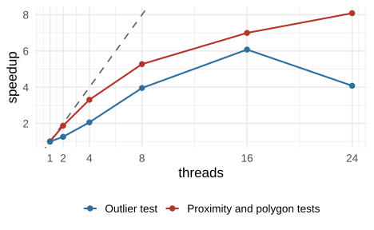

flag_occurrences() runs its slowest steps on several
threads when you set n_threads. Threads are parallel
workers inside one R process, provided by OpenMP, a standard for
shared-memory parallelism in C++. This article shows how to set the
number of threads, which tests use them, why the flags do not depend on
the number, how much time they save on one machine and how to build the
package with OpenMP. Installation is covered in Get started.
Set the number of threads with
n_threads.Check that the flags are the same for any number.
Read the measured speedup of each kind of test.
Enable OpenMP where the compiler does not include it.
Setting the number of threads
n_threads = 1 is the default and runs everything on one
thread. A larger number requests that many threads, and 0
uses every thread OpenMP offers on the machine. The records below are
simulated: 20,000 points in the Alps, spread over 40 species.
library(OccurrenceCleaner)
set.seed(7)
n <- 20000
x <- data.frame(species = sample(sprintf("sp%02d", 1:40), n, TRUE),
decimalLongitude = runif(n, 6, 16),
decimalLatitude = runif(n, 45.5, 48))
tests <- c("capital", "centroid", "sea", "outlier")
f1 <- flag_occurrences(x, tests = tests, n_threads = 1, verbose = FALSE)
f4 <- flag_occurrences(x, tests = tests, n_threads = 4, verbose = FALSE)A request above the number of threads OpenMP offers is reduced to
that number, and a message says so.
OccurrenceCleaner:::cpp_max_threads() returns the limit of
the current build.
Tests that use the threads
Two kinds of work are spread over threads:
The outlier test computes the distances between the records of one species. Each species is one unit of work, and a species with many records is split by rows over several threads.
The record tests that query reference data run per record: the proximity tests (
capital,centroid,institution,gbif_headquartersandaohi) and the point-in-polygon tests (sea,urban, the habitat tests andrange).
Reading the input, the other tests and the bookkeeping of the group stage run on one thread. On a table on disk each chunk of records is processed with the same number of threads (see Large tables on disk).
Identical flags
Each species and each record is computed on one thread, and the distances of a species are added in the order of its records. The result does not depend on the number of threads or on how the work is divided between them.
identical(f4$flags, f1$flags)
#> [1] TRUESpeedup
The timings below come from data-raw/threads.R, which
times flag_occurrences() on simulated records with 1, 2, 4,
8, 16, and 24 threads and keeps the median of three runs. It ran on an
Intel(R) Core(TM) i9-14900K under R 4.6.1, with the other tests switched
off.
| Tests | Records | 1 thread(s), s | 2 thread(s), s | 4 thread(s), s | 8 thread(s), s | 16 thread(s), s | 24 thread(s), s |
|---|---|---|---|---|---|---|---|
| Proximity and polygon tests | 5,000,000 | 3.64 | 1.94 | 1.10 | 0.69 | 0.52 | 0.45 |
| Outlier test | 1,000,000 | 54.41 | 43.09 | 26.39 | 13.75 | 8.95 | 13.33 |
Proximity and polygon tests run 8.1 times faster with 24 threads than with one. The outlier test is fastest with 16 threads, 6.1 times faster than with one, and takes 13.33 s with 24 threads against 8.95 s with 16. The machine has 8 performance cores and 16 efficiency cores, 32 logical processors in all, so the gain per added thread falls beyond 8 threads.

The dashed line is a speedup equal to the number of threads. The measurement covers one machine and one record mix. A table with few species, or one species holding most records, gives the outlier test fewer units of work to spread.
Enabling OpenMP
OpenMP comes with the compiler. Rtools on Windows and the default
compiler on Linux include it, and the package uses it from the first
installation. Apple’s compiler on macOS does not. There, install the
runtime with brew install libomp and add these lines to
~/.R/Makevars before installing the package:
CPPFLAGS += -I/opt/homebrew/opt/libomp/include -Xclang -fopenmp
LDFLAGS += -L/opt/homebrew/opt/libomp/lib -lompOn Intel Macs the Homebrew prefix is
/usr/local/opt/libomp. A build without OpenMP installs and
runs every test on one thread, so n_threads has no effect.
OccurrenceCleaner:::cpp_max_threads() returns
1 for such a build and the number of available threads
otherwise.